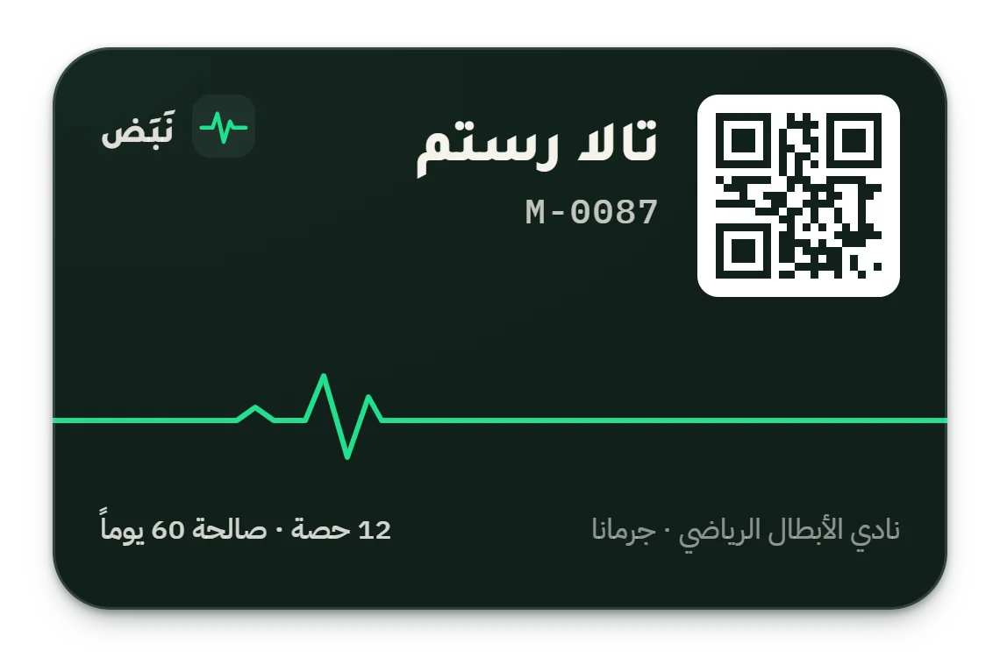
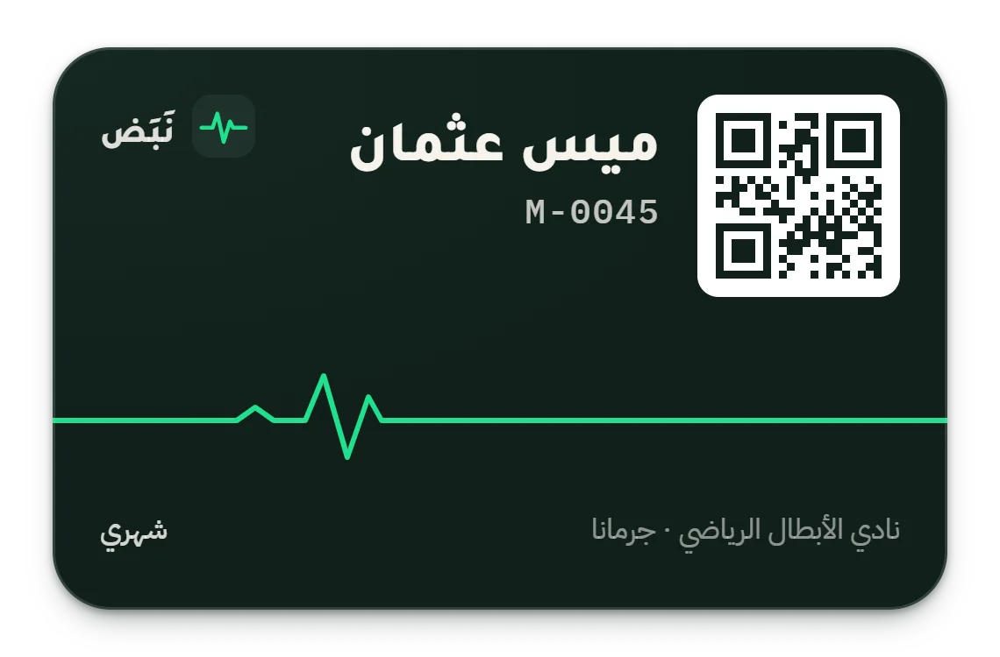
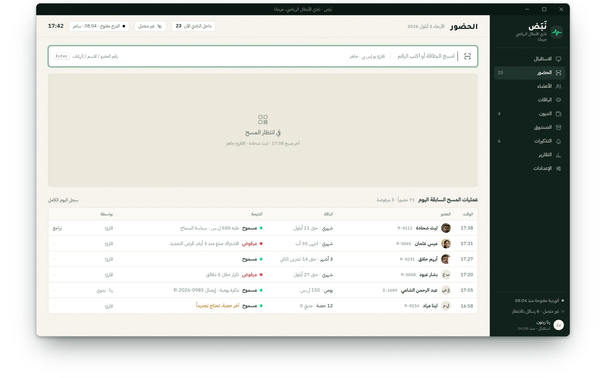
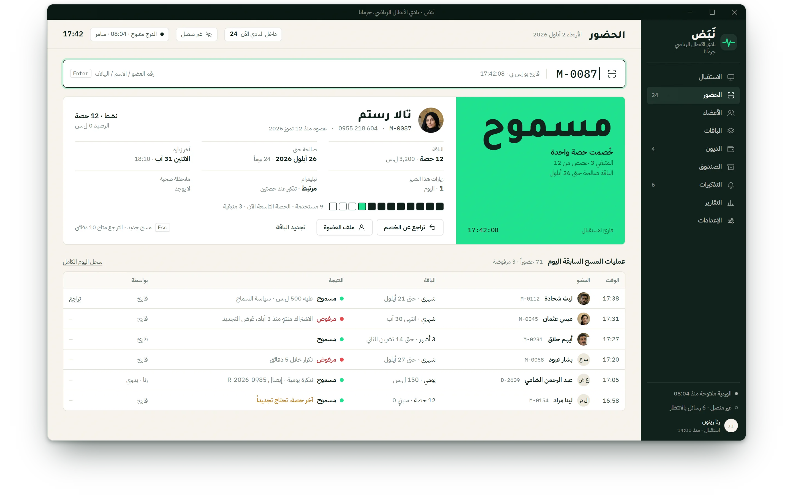
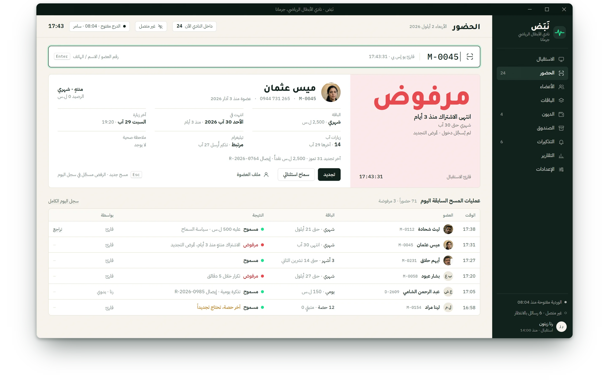
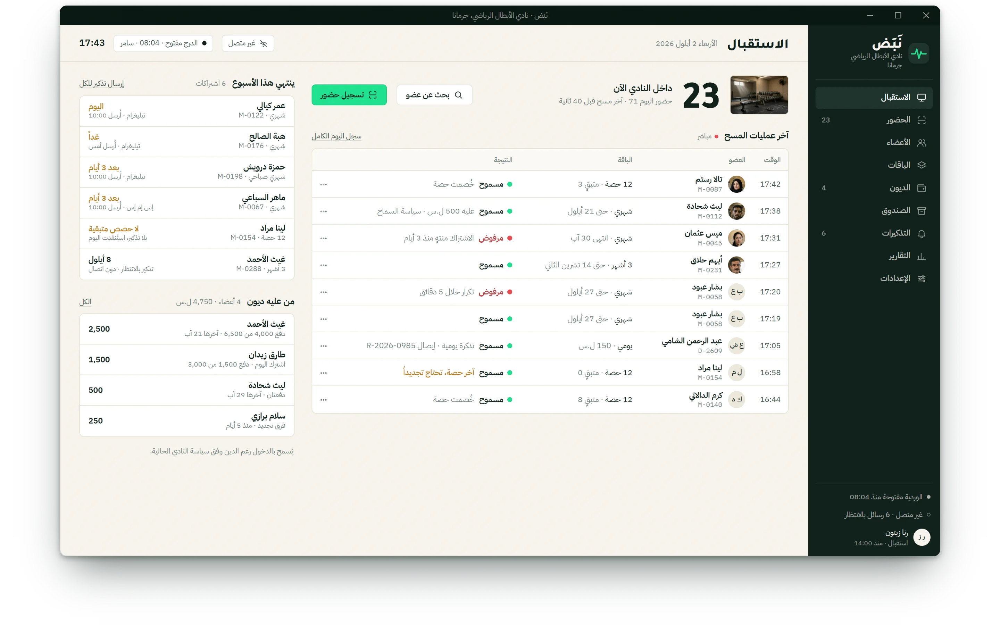
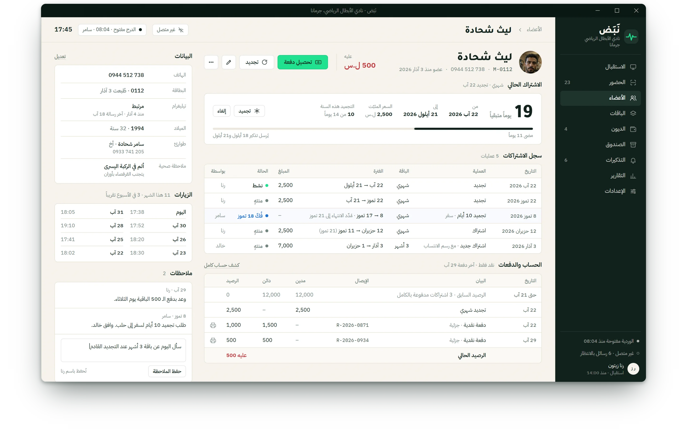
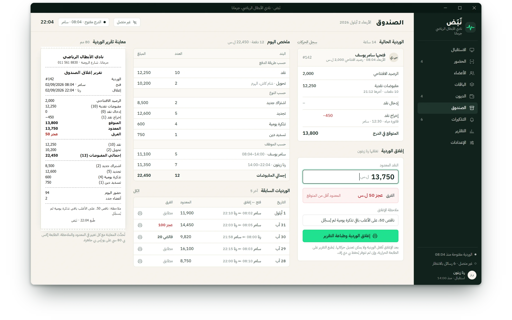
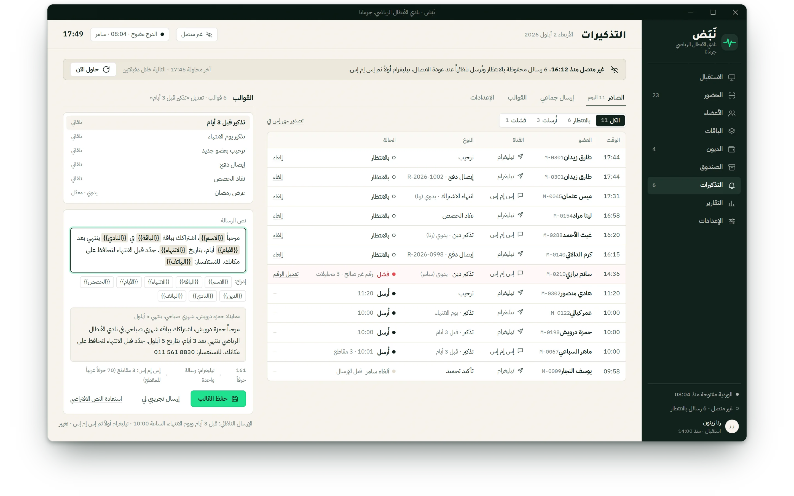

الفصل السابع · نَبَض
نَبَض NABAD
نَبَض. استقبال صالة يُدخل العضو في ثانيتين، بلا إنترنت.
الحركة الأولى · المسح





-
17:42
الاستقبال ينتظر. بطاقة، وقارئ يو إس بي، وحكم يُنتظر في ثانيتين.
-
17:42:08
بطاقة تالا: اثنتا عشرة حصة، بقي منها ثلاث. مسموح، بالفولت، يُقرأ من الباب.
-
17:43:31
بطاقة ميس: انتهى الاشتراك منذ ثلاثة أيام. مرفوض، بالأحمر، مع السبب وزرّ واحد: تجديد.
القصة
تطبيق عربي لسطح المكتب يعمل دون اتصال لصالة سورية واحدة: العضو يدخل في ثانيتين، نقد وأقساط بالليرة، صندوق يُقفل بفرقه، وتذكيرات تنتظر عودة الخط.
عن المنتج
نَبَض يدير استقبال صالة سورية واحدة بكامله: أعضاء ببطاقات رمز الاستجابة السريعة، باقات بتجميد وتجديد، نقد وأقساط وإيصال 80 مم، صندوق يُقفل بفرقه، حضور بحكم فوري، وتذكيرات عبر تيليغرام أو الرسائل النصية تنتظر في الطابور حتى يعود الخط. عربي فقط، يعمل دون اتصال أولاً، ويُباع لكل صالة.
التحدي
- 01
حكم في ثانيتين على باب مزدحم: مسموح أو مرفوض مع السبب، والطابور ينتظر.
- 02
نقد وأقساط بالليرة وحدها، وصندوق يجب أن يتوازن عند 22:04.
- 03
تذكيرات من دون واتساب: تيليغرام والرسائل النصية عبر صندوق صادر يصمد أمام الانقطاع.
المنهج
إلكترون والمجال كلّه في العملية الرئيسية عبر جسر منمّط، ملف إس كيو لايت مشفَّر واحد، دفتر يُضاف إليه فقط، حالات اشتراك مشتقّة لا مخزَّنة، صندوق صادر صامد، ودليل تشغيل عربي للاستقبال.
دوري
مالك المنتج والباحث والمهندس الوحيد: دراسة السوق، وثيقة المتطلبات، الهوية، التطبيق، منصّة الاختبار والمثبّت، في ثلاثة أسابيع.
الحركة الثانية · من عليه دين، ومن يوشك أن يغادر
من عليه دين، ومن يوشك أن يغادر
في 17:43 يعرض الاستقبال 23 داخل النادي، وستة اشتراكات تنتهي هذا الأسبوع وبجانب كل اسم أثر التذكير المُرسَل، وأربعة أعضاء عليهم 4,750. وملف ليث بجانبه يحفظ الدفتر صادقاً: 2,500 مستحقّة، دُفع 1,500 في 22 آب و500 في 29 آب، وبقي عليه 500.

ينتهي هذا الأسبوع، والتذكيرات أُرسلت
1,500 ثم 500 من 2,500: عليه 500دفتر المالك، رقمياً. النقد والعربية وانقطاع الكهرباء، كلّها مفترَضة.
الحركة الثالثة · 22:04 · الصندوق وصندوق الصادر
22:04 · الصندوق وصندوق الصادر
في 22:04 تُقفل رنا الوردية #142: رصيد افتتاحي 2,000، ومقبوضات نقدية 12,250، و450 خرجت لفاتورة المياه؛ المتوقّع 13,800 والمعدود 13,750. عجز الخمسين يُكتب في تقرير Z ولا يُناقَش. وفي الجهة الأخرى صندوق الصادر منقطع منذ 16:12 وست رسائل بالانتظار، تخرج، تيليغرام أولاً، حين يعود الخط.

المتوقّع 13,800 والمعدود 13,750: عجز 50، مكتوب
ستة في الطابور، تخرج حين يعود الخطالنتائج
ثانيتان حتى الحكم
مسموح أو مرفوض، مع السبب
أيام قبل الانتهاء يخرج التذكير
تيليغرام أولاً، والرسائل النصية إن لزم
صالة لكل ترخيص، ملكية كاملة
مفتاح موقَّع دون اتصال، بلا اشتراك
الفصل السابع · اكتمل
حقل الفصل التالي يغمر الشاشة